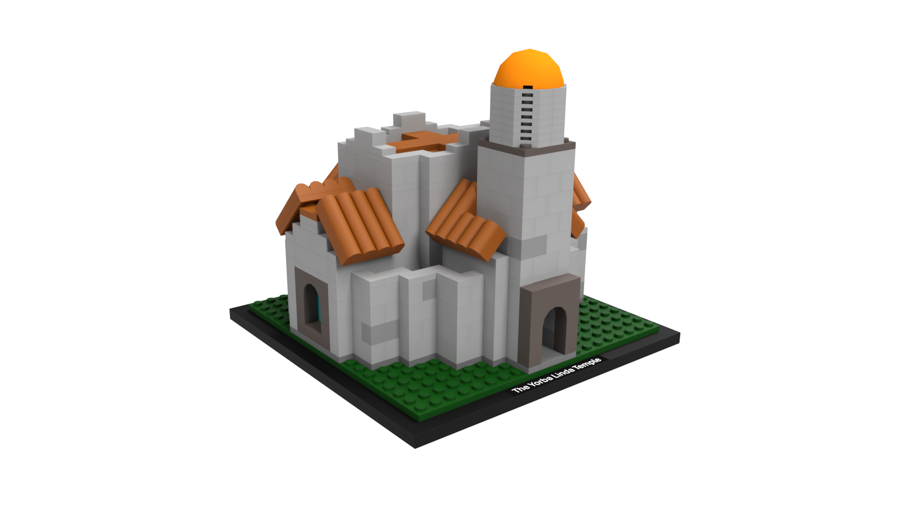

I have been involved in machine manufacturing for about 6 years. In that time I have been involved in many projects. Here are a few of them:
Cork Coasters with a Wood Coaster Holder
6 differently designed coasters
Includes 2 metal dowels on the sides of the coaster holder made by CNC lathe
Coasters made with laser cutter
Holder made with recycled table legs glued together and shaped
Machinist Cube
All Mill work
Rotary Table
Compass
Fusion 360
3D Printing
Threads Modeled on Bottom to Attach to Camera Tripod
Bolt-Action Pen
See More Info Below
LEGO 3D Model Building
Onshape

Try One Yourself
One project I recommend is making a Bolt-Action Pen.
I made one made of aluminum and brass. The design and walkthrough are all done by Inheritance Machining. Here is his video:
Where I Want to go With Manufacturing
At its simplest, sustainable manufacturing is the process of creating products using methods that minimize negative impacts on the environment while conserving energy and natural resources.
Think of it as a shift from the old "take-make-waste" model to a more responsible way of building things.
Instead of just focusing on how fast or cheap a product can be made, companies look at the entire lifecycle of an item—from where the raw materials come from to what happens to the product when you're done with it.
In recent years, more companies have become invested in sustainable manufacturing.
Companies are moving toward sustainable manufacturing not just because it's good for the planet, but because it has become a strategic business necessity.
In 2025, over 91% of manufacturing leaders have sustainability initiatives in place, driven by a combination of financial gains, market demand, and new technologies.
I am driven to enter sustainable manufacturing because I believe we are at a critical crossroads regarding how we manage our world's resources.
It seems like the traditional 'take-make-waste' model is no longer a viable path for long-term stability, and I am committed to being part of the solution.
My focus is on resource stewardship.
By championing waste reduction and integrating circular economy principles, we can ensure that the materials we use today are preserved for the generations of tomorrow.
For me, this isn't just about operational efficiency.
It's about the responsibility we have to our communities and the environment.
I want to help organizations transition to models that don't just 'do less harm' but actively contribute to a healthier planet and a more resilient society.